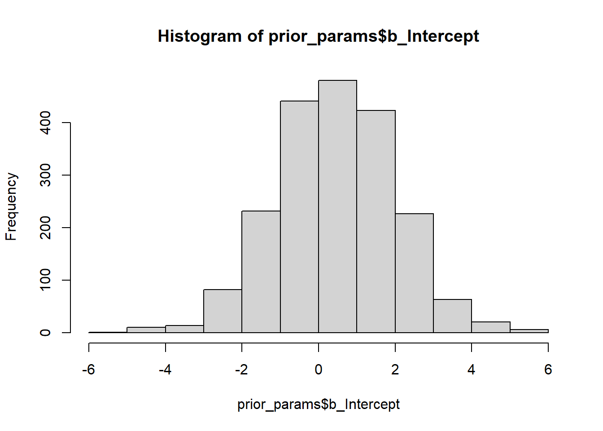
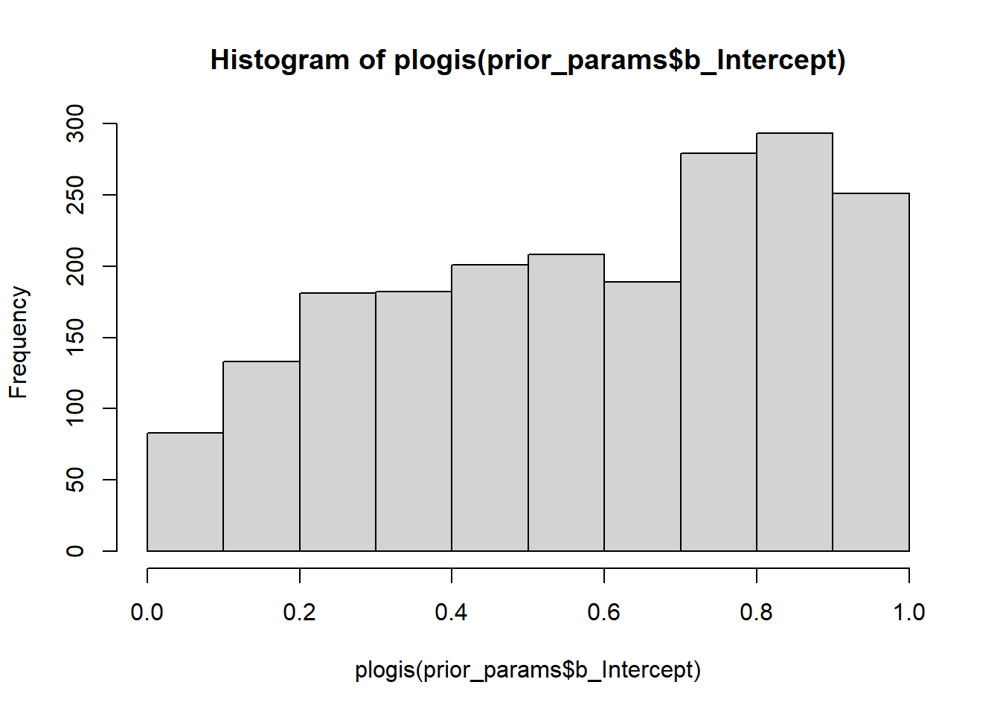
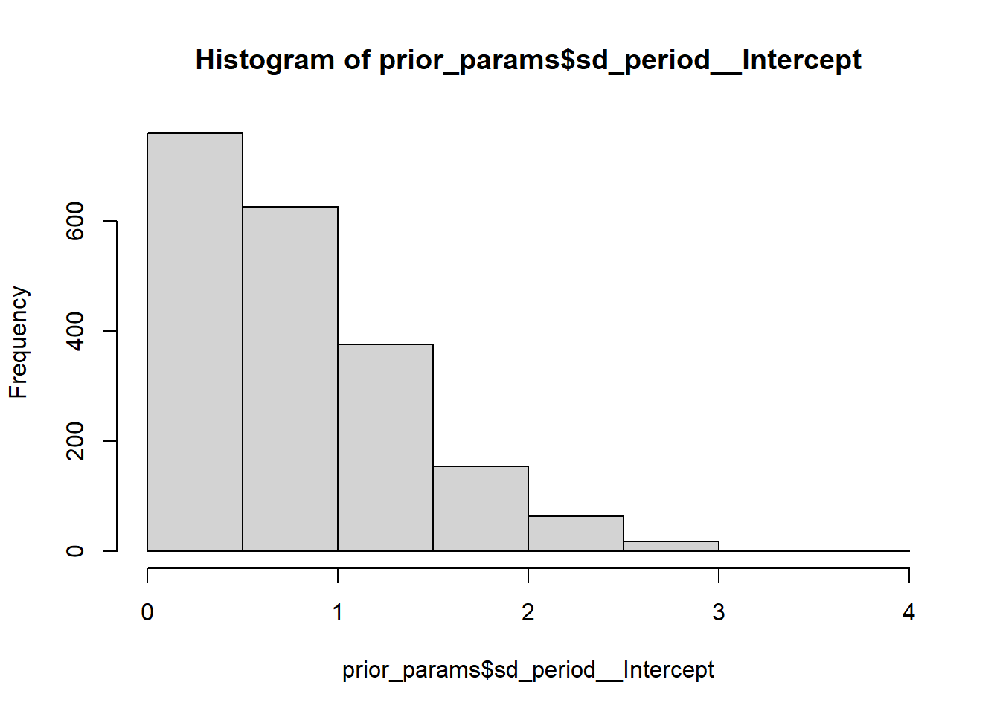
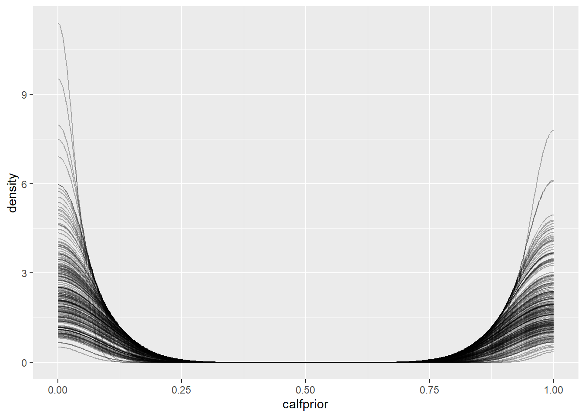
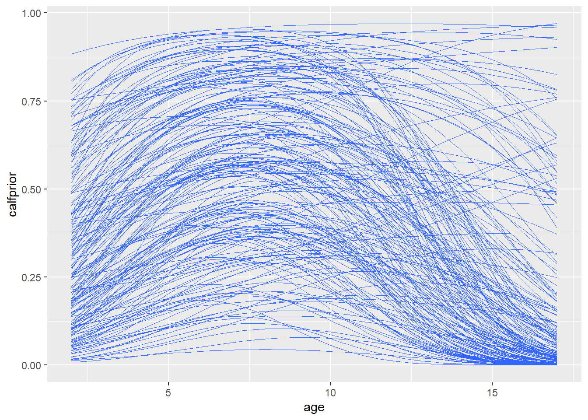
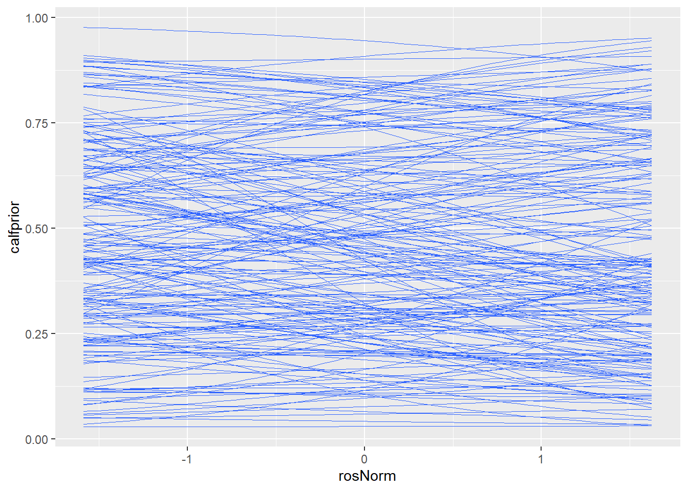
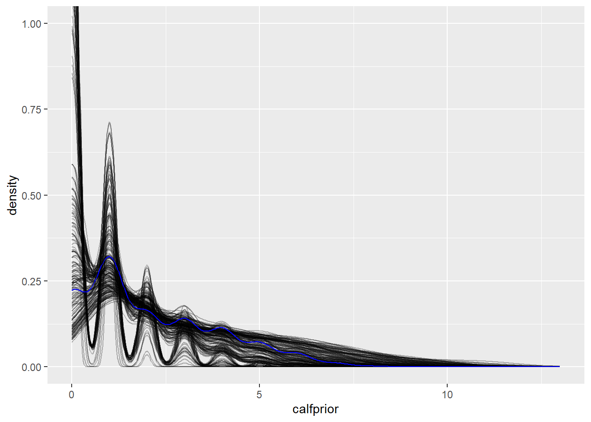
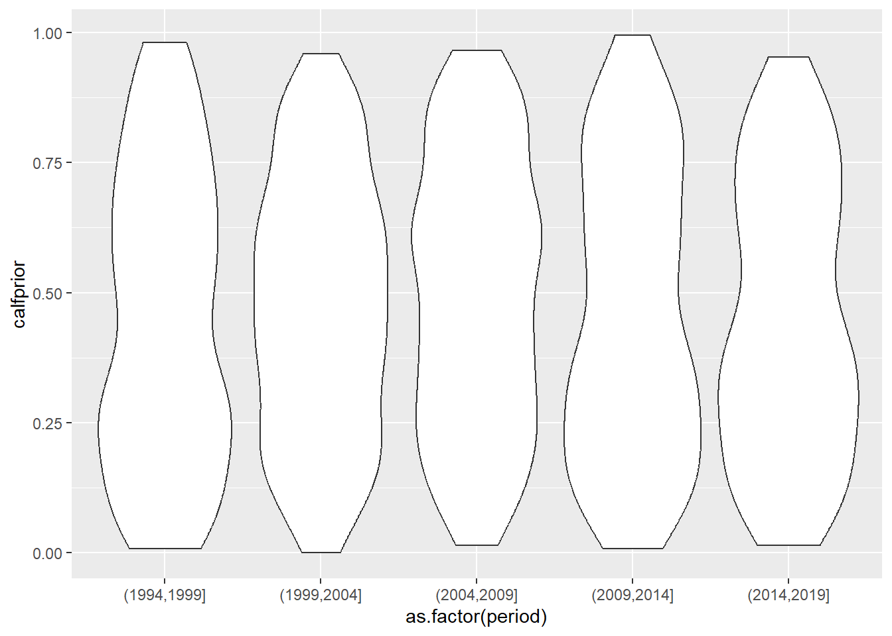
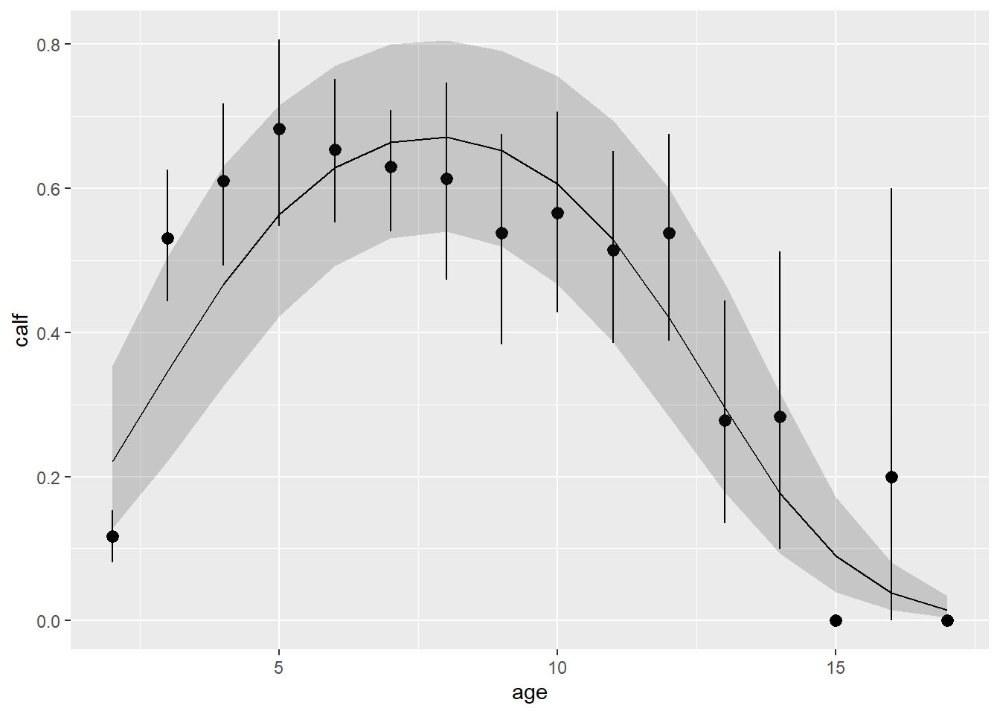

Modèles hiérarchiques bayésiens 2
Données

Svalbard reindeer
Les données proviennent de mon post-doctorat. Nous analyserons la probabilité d’un renne d’avoir un bébé durant l’été. Dans ce système, un des plus importants facteurs environnementaux est la présence d’épisodes de pluie-sur-neige. Ceux-ci surviennent quand des précipitations surviennent au cours de l’hivers. Celles-ci gèlent et forment ensuite d’épaisse couche de glace bloquant l’accès aux ressources alimentaires.
Cependant, avec le réchauffement continue de l’arctique, certain chercheur croient que le ros n’aura plus d’effet. Quand il y a des épisodes de pluies durables suivi d’une période chaude, la pluie cause un dégagement des ressources alimentaires et a le temps de ruisseler avant de geler. Nous tenterons d’explorer ces changements dans l’effet du ros.
library(dplyr)
library(readr)
library(ggplot2)
library(tidyr)
library(cowplot)
library(lubridate)
dat <- read_csv("../donnees/SvalbardDat.csv")
dat <- dat %>% mutate(age=year-yrbirth) %>% filter(age>1)
ros <- read_csv("../donnees/ROS.csv")dat <- dat %>% left_join(ros) %>%
mutate(rosNorm = scale(log(ros)),
ages=scale(age),
age2=ages^2,
obsid=1:n(),
period=cut(year,breaks = seq(1994,2020,by=5)))g1 <- dat %>% group_by(age) %>% summarise(mc=mean(calf,na.rm=T),n()) %>%
ggplot(aes(age,mc))+geom_point()
g2 <- dat %>% group_by(period,year,rosNorm) %>% summarise(mc=mean(calf,na.rm=T),n()) %>%
ggplot(aes(rosNorm,mc,color=period))+geom_point()+geom_smooth(method = lm,se=F)+guides(color='none')
plot_grid(g1,g2)
Nous transformons d’abord les prédicteurs:
- rosNorm est le logarithme de ros, normalisé pour avoir une moyenne de 0 et un écart-type de 1.
- ages est la normalisation de age pour avoir une moyenne de 0 et un écart-type de 1
- Nous créons une variable age2 pour l’effet quadratique de l’âge.
- et finalement une variable période qui sépare l’étude en 5 périodes
1. Modèle bayésien de la probabilité de reproduction selon l’âge et du ros
Bien entendu, il faudra contrôler pour l’âge des individus. Le modèle sera donc un modèle binomial avec comme effet fixe, l’âge et son carré, et le ros. Les effets aléatoires consisteront de l’année, la période et une pente du ros variant selon la période.
Notes:
La formule du modèle dans
brmsuit la même syntaxe quelmerpour la spécification des effets fixes et aléatoires.Bien qu’il serait possible d’ajouter l’interaction
age:ros, l’année, l’ID, la densité et plusieurs autres variables contrôle. Nous les omettons ici afin de réduire le temps de calcul des modèles.
A Choisissez des distributions a priori
pour les paramètres du modèle décrit ci-dessus. Voici un exemple de code
où il ne manque que la spécification des distributions. Les quatre
premières lignes définissent les distributions a priori pour
l’ordonnée à l’origine et les coefficients des trois effets fixes, les
trois suivantes définissent les distributions pour les écarts-types des
effets aléatoires (class = "sd"), tandis que la dernière
réfère à l’écart-type des observations individuelles
(class = "sigma").
library(brms)
my_prior <- c(set_prior("", class = "Intercept"),
set_prior("", class = "b", coef = "ages"),
set_prior("", class = "b", coef = "age2"),
set_prior("", class = "b", coef = "rosNorm"),
set_prior("", class = "sd", coef = "Intercept", group = "id"),
set_prior("", class = "sd", coef = "Intercept", group = "period"),
set_prior("", class = "sd", coef = "rosNorm", group = "period"))Il est recommandé de choisir des distributions normales dans tous les
cas. Pour “sd”, ces distributions seront interprétées comme des
demi-normales car il est sous-entendu que ces paramètres sont \(\geq 0\). Pour choisir la moyenne et
l’écart-type de chaque distribution normale, considérez l’interprétation
de chaque paramètre et en particulier les échelles des prédicteurs
ros , ages et age2. Dans bmrs, la
famille utilisé sera family=bernoulli("logit").
Quant aux écarts-types des effets aléatoires (“sd”), leur distribution a priori peut avoir la même largeur que celle du coefficient “b” correspondant.
library(brms)## Warning: package 'brms' was built under R version 4.2.2## Loading required package: Rcpp## Warning: package 'Rcpp' was built under R version 4.2.2## Loading 'brms' package (version 2.18.0). Useful instructions
## can be found by typing help('brms'). A more detailed introduction
## to the package is available through vignette('brms_overview').##
## Attaching package: 'brms'## The following object is masked from 'package:stats':
##
## army_prior <- c(set_prior("normal(0,1.5)", class = "Intercept"),
set_prior("normal(.5,.25)", class = "b", coef = "ages"),
set_prior("normal(-.5,.25)", class = "b", coef = "age2"),
set_prior("normal(0,.25)", class = "b", coef = "rosNorm"),
# set_prior("normal(0,.5)", class = "sd", coef = "Intercept", group = "id"),
set_prior("normal(0,1)", class = "sd", coef = "Intercept", group = "period"),
set_prior("normal(0,.5)", class = "sd", coef = "rosNorm", group = "period"))B Tirez maintenant un échantillon de la distribution
conjointe a priori des paramètres avec brm. Je
suggère de spécifier chains = 1, iter = 1500, warmup = 1000
pour produire une seule chaîne de Markov avec 1000 itérations de rodage
et 500 itérations d’échantillonnage. Visualisez ensuite la distribution
de calf prédite pour chaque itération des paramètres a
priori.
res_prior <- brm(calf ~ ages+age2+rosNorm +(rosNorm|period),family=bernoulli("logit"),
prior = my_prior,sample_prior = "only",
data = dat,chains = 1, iter = 3000, warmup = 1000)##
## SAMPLING FOR MODEL 'anon_model' NOW (CHAIN 1).
## Chain 1:
## Chain 1: Gradient evaluation took 4e-05 seconds
## Chain 1: 1000 transitions using 10 leapfrog steps per transition would take 0.4 seconds.
## Chain 1: Adjust your expectations accordingly!
## Chain 1:
## Chain 1:
## Chain 1: Iteration: 1 / 3000 [ 0%] (Warmup)
## Chain 1: Iteration: 300 / 3000 [ 10%] (Warmup)
## Chain 1: Iteration: 600 / 3000 [ 20%] (Warmup)
## Chain 1: Iteration: 900 / 3000 [ 30%] (Warmup)
## Chain 1: Iteration: 1001 / 3000 [ 33%] (Sampling)
## Chain 1: Iteration: 1300 / 3000 [ 43%] (Sampling)
## Chain 1: Iteration: 1600 / 3000 [ 53%] (Sampling)
## Chain 1: Iteration: 1900 / 3000 [ 63%] (Sampling)
## Chain 1: Iteration: 2200 / 3000 [ 73%] (Sampling)
## Chain 1: Iteration: 2500 / 3000 [ 83%] (Sampling)
## Chain 1: Iteration: 2800 / 3000 [ 93%] (Sampling)
## Chain 1: Iteration: 3000 / 3000 [100%] (Sampling)
## Chain 1:
## Chain 1: Elapsed Time: 0.123 seconds (Warm-up)
## Chain 1: 0.27 seconds (Sampling)
## Chain 1: 0.393 seconds (Total)
## Chain 1:summary(res_prior)## Family: bernoulli
## Links: mu = logit
## Formula: calf ~ ages + age2 + rosNorm + (rosNorm | period)
## Data: dat (Number of observations: 1922)
## Draws: 1 chains, each with iter = 3000; warmup = 1000; thin = 1;
## total post-warmup draws = 2000
##
## Group-Level Effects:
## ~period (Number of levels: 5)
## Estimate Est.Error l-95% CI u-95% CI Rhat Bulk_ESS
## sd(Intercept) 0.78 0.59 0.03 2.19 1.00 1445
## sd(rosNorm) 0.40 0.31 0.01 1.14 1.00 1469
## cor(Intercept,rosNorm) 0.00 0.56 -0.94 0.95 1.00 4210
## Tail_ESS
## sd(Intercept) 762
## sd(rosNorm) 797
## cor(Intercept,rosNorm) 1691
##
## Population-Level Effects:
## Estimate Est.Error l-95% CI u-95% CI Rhat Bulk_ESS Tail_ESS
## Intercept 0.46 1.55 -2.62 3.46 1.00 4562 1388
## ages 0.50 0.24 0.04 0.98 1.00 3523 905
## age2 -0.50 0.25 -0.99 -0.02 1.00 3834 1399
## rosNorm -0.00 0.24 -0.47 0.46 1.00 4622 1289
##
## Draws were sampled using sampling(NUTS). For each parameter, Bulk_ESS
## and Tail_ESS are effective sample size measures, and Rhat is the potential
## scale reduction factor on split chains (at convergence, Rhat = 1).prior_params <- as_draws_df(res_prior) %>% mutate(id=1:n())
hist(prior_params$b_Intercept)
hist(plogis(prior_params$b_Intercept))
hist(prior_params$sd_period__Intercept)
prior_pred <- posterior_predict(res_prior)
prior_df <- data.frame(prior_pred)[1:200,]
prior_df$sim_id <- 1:nrow(prior_df)
prior_df <- pivot_longer(prior_df, cols = -sim_id,
names_to = "obsid", values_to = "calfprior") %>%
mutate(obsid=as.numeric(substr(obsid,2,9)))
ggplot(prior_df, aes(x = calfprior)) +
stat_density(aes(group = sim_id), position = "identity", geom = "line", alpha = 0.3) 
prior_df <- prior_df %>% left_join(dat)
prior_df %>% ggplot(aes(x=as.factor(round(ages,2)),y=calfprior))+geom_violin()ggplot(prior_df,aes(x=age,y=calfprior))+
geom_smooth(aes(group = sim_id),method="glm",formula = y~x+I(x^2),method.args = list(family='binomial'),se=F,linewidth=0.2)
ggplot(prior_df,aes(x=rosNorm,y=calfprior))+
geom_smooth(aes(group = sim_id),method="glm",formula = y~x,method.args = list(family='binomial'),se=F,linewidth=0.2)
prior_df %>%group_by(sim_id,id) %>% summarise(calfprior=sum(calfprior)) %>%
ggplot(aes(x=calfprior))+
stat_density(aes(group = sim_id), position = "identity", geom = "line", alpha = 0.3)+
stat_density(data=data.frame(calfprior=tapply(dat$calf,INDEX = dat$id,FUN = sum)),
aes(x=calfprior),
position = "identity",
geom = "line", color="blue")+
coord_cartesian(ylim=c(0,1))
prior_df %>%group_by(sim_id,period) %>% summarise(calfprior=mean(calfprior)) %>%
ggplot(aes(x=as.factor(period),y=calfprior))+geom_violin()
En raison du grand nombre d’effets estimés et du fait que nous
n’imposons que des contraintes légères sur chaque distribution a
priori, on doit s’attendre à des valeurs extrêmes voire impossibles
(grandes valeurs positives et négatives); l’important est que la densité
soit plus grande dans une plage de valeurs réalistes. Il peut être utile
de faire un “zoom” sur une partie du graphique ggplot en y
ajoutant
coord_cartesian(xlim = c(..., ...), ylim = c(..., ...))
avec des limites en \(x\) et \(y\).
C Ajustez maintenant le modèle avec
brm. Vous pouvez réduire le nombre de chaînes de Markov à 2
pour sauver du temps, mais conservez les valeurs par défaut pour le
nombre d’itérations. (Vous pouvez ignorer l’avertissement selon lequel
la taille effective de l’échantillon ou ESS est faible.) Comment
pouvez-vous évaluer la convergence du modèle?
res_br <- brm(calf ~ ages+age2+rosNorm +(rosNorm|period),family=bernoulli("logit"),
prior = my_prior,iter = 4000,thin=2,
data = dat,chains = 2)


D Comparez la magnitude du coefficient de
rosNorm à celle des effets aléatoires. Qu’est-ce que cette
comparaison vous apprend?
summary(res_br)## Warning: There were 4 divergent transitions after warmup. Increasing
## adapt_delta above 0.8 may help. See
## http://mc-stan.org/misc/warnings.html#divergent-transitions-after-warmup## Family: bernoulli
## Links: mu = logit
## Formula: calf ~ ages + age2 + rosNorm + (rosNorm | period)
## Data: dat (Number of observations: 1922)
## Draws: 2 chains, each with iter = 4000; warmup = 2000; thin = 2;
## total post-warmup draws = 2000
##
## Group-Level Effects:
## ~period (Number of levels: 5)
## Estimate Est.Error l-95% CI u-95% CI Rhat Bulk_ESS
## sd(Intercept) 0.56 0.28 0.24 1.30 1.00 873
## sd(rosNorm) 0.50 0.20 0.20 0.97 1.00 1476
## cor(Intercept,rosNorm) 0.30 0.40 -0.53 0.91 1.00 995
## Tail_ESS
## sd(Intercept) 488
## sd(rosNorm) 1683
## cor(Intercept,rosNorm) 933
##
## Population-Level Effects:
## Estimate Est.Error l-95% CI u-95% CI Rhat Bulk_ESS Tail_ESS
## Intercept 0.59 0.32 0.01 1.25 1.00 674 459
## ages 0.63 0.06 0.52 0.75 1.00 1645 1717
## age2 -0.67 0.05 -0.78 -0.58 1.00 1009 555
## rosNorm -0.31 0.19 -0.62 0.09 1.00 1389 1143
##
## Draws were sampled using sampling(NUTS). For each parameter, Bulk_ESS
## and Tail_ESS are effective sample size measures, and Rhat is the potential
## scale reduction factor on split chains (at convergence, Rhat = 1).E Vérifier les prédictions a posteriori: Appliquez
predict au modèle pour obtenir la moyenne, l’écart-type et
l’intervalle à 95% pour la prédiction a posteriori. Vous pouvez
donner un data.frame à l’argument newdata pour obtenir les prédictions
voulues
(expand.grid(rosNorm=seq(-1.6,1.6,l=30),period=unique(dat$period),...)).
Illustrez les prédictions du modèle et leurs intervalles de crédibilité
pour les différentes périodes pour un individu de 7 ans.
post_pred <- posterior_epred(res_br,
newdata = mutate(dat,ages=0,age2=0),
re_formula =~(rosNorm|period))
dat$y=apply(post_pred,2,mean)
dat$y.sd=apply(post_pred,2,sd)
dat$ymin=apply(post_pred,2,function(x) quantile(x,0.025))
dat$ymax=apply(post_pred,2,function(x) quantile(x,0.975))
pt <- dat %>% group_by(period,year) %>% summarise_if(is.numeric,mean)
newd=expand.grid(ages=0,age2=0,rosNorm=seq(-1.6,1.6,l=30),period=unique(dat$period),id="W16")
post_pred2 <- posterior_epred(res_br,newdata =newd, re_formula =~(rosNorm|period) )
newd$y=apply(post_pred2,2,mean)
newd$y.sd=apply(post_pred2,2,sd)
newd$ymin=apply(post_pred2,2,function(x) quantile(x,0.025))
newd$ymax=apply(post_pred2,2,function(x) quantile(x,0.975))
ggplot(newd,aes(x=rosNorm,y=y))+
geom_point(data=pt)+
geom_ribbon(aes(fill=period,ymin=ymin,ymax=ymax),alpha=0.2)+
geom_path(aes(color=period))
post_pred <- posterior_epred(res_br,
newdata = mutate(dat,rosNorm=0),
re_formula =NA)
dat$y=apply(post_pred,2,mean)
dat$y.sd=apply(post_pred,2,sd)
dat$ymin=apply(post_pred,2,function(x) quantile(x,0.025))
dat$ymax=apply(post_pred,2,function(x) quantile(x,0.975))
pt <- dat %>% group_by(period,age,year) %>% summarise_if(is.numeric,mean)
newd=dat %>% select(age,ages,age2) %>% unique() %>% mutate(rosNorm=0)
post_pred2 <- posterior_epred(res_br,newdata =newd, re_formula =NA)
newd$y=apply(post_pred2,2,mean)
newd$y.sd=apply(post_pred2,2,sd)
newd$ymin=apply(post_pred2,2,function(x) quantile(x,0.025))
newd$ymax=apply(post_pred2,2,function(x) quantile(x,0.975))
ggplot(newd)+
stat_summary(data=pt,aes(x=age,y=calf),fun.data = 'mean_cl_boot',geom='pointrange')+
geom_ribbon(aes(x=age,y=y,ymin=ymin,ymax=ymax),alpha=0.2)+
geom_line(aes(x=age,y=y,ymin=ymin,ymax=ymax))## Warning in geom_line(aes(x = age, y = y, ymin = ymin, ymax = ymax)): Ignoring
## unknown aesthetics: ymin and ymax